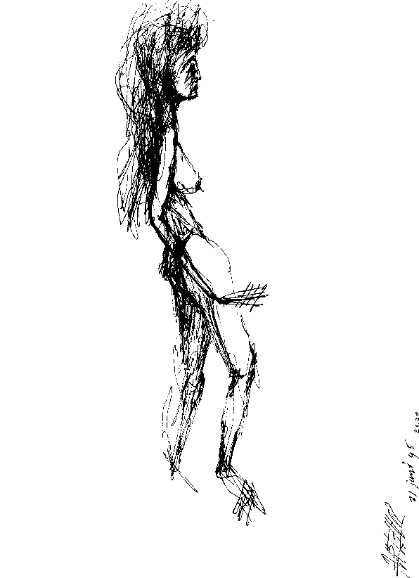

Art Friends...
.........Reactions on the Art of ArthurX.
To give a reaction, send it to Elizabeth
By Colin Brayton, freelance journalist, Forbes, ArtForum, editor Hairyeyeball/
Posted by hairyeyeball at 05:18 PM | | Filed under: Art Crimes
From the studio of our new Ryze friend Elizabeth of Delft, The Netherlands, who apparently fronts some Situationist punk band known as ArthurX and the Scars and claims to have been educated at a nonexistent insitution of higher learning, among other things. See also Song Texts.
Fly Arthur over to Brooklyn or São Paulo sometime for this new cocktail I just invented, called The Hairy Eyeball! I predict The Scars will be the Next Big Thing. Can I be your toadie and publicist?


By Paul Wynter, director LondonArt.co.uk
"Arthur x is a printmaker and a painter who spends a great deal of time drawing and sketching the human form.
Whether it is someone sat opposite him
at a restaurant or on a train Journey,
Arthur is fascinated with the way line can
eloquently describe the human form and capture
the spirit of the sitter.
This visual discipline allows him to retain
the energy and excitement of his sketches
intrinsically into his printmaking and painting.
"

By Chingiz Abassov, russian artist
I very much enjoyed seeing Your work on website.
Chingiz Abassov Artist
"Hello, Arthur
I have just visited your site,
Patrick Tahon
Painter
Uit de Haagsche Courant door Jimmy Tigges
DELFTSE TOEREN |ArthurX The Scars:
Wild en emotioneel, in een erg eigen, directe stijl.
De muziek van de eenmansband The Scars - onder welke naam ArthurX zich muzikaal uit - lokt bij recensenten en programmamakers nogal uiteenlopende reacties uit.
Op zijn zachtst gezegd kan de muziek van ArthurX, alias The Scars,
Picasso
In 1999 verscheen de debuut-cd Rude Moon.
'Don't you éver let her down', schreeuwt Arthur repeterend in de microfoon.
Het tweede nummer heet Thirteen. Met teksten als 'Ain't no woman, ain't no kid' lijkt dit de Arthuriaanse remake van Paul van Vliets Meisjes van Dertien
Zo af en toe waagt een programmamaker zich aan wat aandacht voor ArthurX i.c. The Scars. Zo werd de single eenmaal gedraaid bij de VPRO
En soms is de geniale gekte van ArturX ook live te bewonderen.
Voorlopig geen Amerikaans platencontract dus voor de Delftse muzikant,
Exchange Links:
Profile, Paintings, lithos of ArthurX on:
By: Paul Wynter, LondonArt.co.uk
www.Londonart.co.uk
They are stunning and Your Art is «fabulous» !
This is my own philosophy and I truly appreciated
the essence of concept in Your work.
I am amazed at your art works and Your talent
it is outstanding I think that You are great Master
of your Art.
Wish You success in Your art business.
Wishing You Peace and Joy this Holiday Season
and throughout the coming Year !
Regards
Chingiz Abassov Artist,
www.abassov.com
"Loved the site, LOVED the ART,
Great variation to the boring carbon copy,
we all see too much of," Daniel Freedman, Hoochiegear,
Indie Radio, PA, USA.
By Patrick Tahon, Painter.
I like it very much.
Perhaps we can exchange our links or banners ???
If you want to link, please link to :
http://www.artgalerie34.com
My best regards,
Patrick.
http://www.artgalerie34.com
23 sept 2002
SheGonnaGonnaGetIt/Thirteen (1999)
Zo wordt de expressieve schilderkunst van Delftenaar ArthurX (35) treffend aangeprezen in zijn promotiefolder.
Dezelfde omschrijving kan zonder bezwaar ook toegepast worden op de muziek van deze kunstenaar,
die weliswaar de haardos van Bob Dylan heeft, maar qua geluid veeleer aan iemand als Captain Beefheart doet denken.
Net als de Captain uit ArthurX zich, als schilder, muzikant, dichter en zelfs architect,
op meerdere artistieke fronten. Als hij dan toch met Dylan vergeleken moet worden, dan is dat de Dylan die twee snaren mist op zijn gitaar, meent een Amerikaanse recensent.
Zo wordt wel duidelijk uit de citaten op de website, die door vriendin en promoter Elizabeth wordt onderhouden:
'Het is een volle aanslag op alle zes de zintuigen', 'Irritant, stuurloos, luisteraar-onvriendelijk', 'Fantastische stem, wat heeft die jongen allemaal gerookt en gedronken?', 'Veelbelovend en verwarrend',
'Mijn luisteraars lopen weg', 'Psychomania aan de microfoon', 'Gezonde dosis gekte, ik begrijp er geen snars van'.
in elk geval niet beschouwd worden als doorsnee top-40 werk.
Wie liedjes wil beluisteren die ordentelijk zijn opgedeeld in een paar coupletten,
afgewisseld met een herkenbaar refrein en halverwege een instrumentaal tussenstukje, moet dringend worden aangeraden zijn of haar muzikale heil elders te zoeken.
ArthurX spuugt zijn teksten rauw in de microfoon, onderwijl zijn emoties kracht bijzettend via zijn gitaar.
Wie ervoor openstaat, zou de wel degelijk aanwezige aanstekelijkheid van zijn opzwepende muziek kunnen ontdekken.

Tegelijkertijd kwam, eveneens in eigen beheer, een bijbehorende cd-single uit met een ingekorte versie (inclusief twee langere takes)
van SheGonnaGonnaGetIt. De grafische vormgeving van het zelf gekopieerde zwartwit hoesje is van eigen hand, evenals de fraaie tekening van twee naakte vrouwen,
in hoekige Picasso-stijl, op het labeltje.
Hortend en stotend komen de klanken uit zijn mond en gitaar. Zelf bespeelde bas en drums vullen het geluid aan.
('te groot voor de poppen, te klein voor de kerels'). ArthurX bewondert haar 'Legs, lips, and the move of her hair'.
en typeerde Hans van den Burg op TV West het nummer als 'een nachtmerrie'.
Promoter Elizabeth herinnert zich een 'legendarisch optreden' in de Koornbeurs: "Een scout (gestuurd door de man achter Led Zeppelin en Madonna
van een onderlabel van Warner was speciaal uit New York gestuurd om The Scars te zien optreden. Hij deed zich voor als een Russische professor uit Moskou.
Maar na de aanslagen op 11 september ging zijn label op de fles. Hij adviseert nu alleen nog the Warner boss".
die als kunstschilder trouwens wel Nederland zal vertegenwoordigen op de Biennale del Arte Contemporary di Firenze, in december 2003.
En er is - alweer in eigen beheer - een nieuwe cd uit met het zeer aanstekelijke 'Hooga, hooga, hooga/Hook, hook, hook!'
(te beluisteren op www.thescars.com).

do you want to know what it is